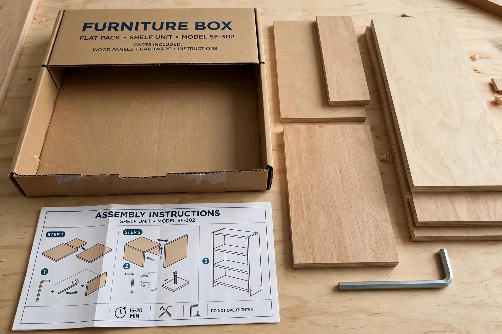

Flat-pack furniture
From Wikipedia, the free encyclopedia
| Flat-pack furniture | |
 | |
| Other names | Ready-to-assemble (RTA) furniture, knock-down furniture, kit furniture |
|---|---|
| Key popularizer | IKEA |
| Common materials | Particleboard, MDF, melamine laminate, metal fittings |
Flat-pack furniture, also known as ready-to-assemble or knock-down furniture, is furniture sold in flat packaging as separate panels and fittings, designed to be assembled by the customer with simple tools such as an Allen (hex) key. Because flat boxes stack and ship far more efficiently than assembled furniture, the format dramatically reduces transport and storage costs.
History
Knock-down furniture has precedents in campaign furniture and nineteenth-century Thonet bentwood chairs shipped in pieces. The modern format is credited largely to Swedish furniture retailer IKEA: in 1956, employee Gillis Lundgren, struggling to fit a table into a car, removed its legs — inspiring founder Ingvar Kamprad to build the business around flat packaging and customer self-assembly. Australian inventor and others filed early patents for ready-to-assemble designs in the same era.
Design and assembly
Pieces typically use cam locks, dowels, and confirmat screws joining laminated particleboard panels. Wordless pictorial instruction booklets — IKEA's are famous, featuring its cartoon "Allen man" — guide assembly. Critics cite durability, waste and assembly frustration; psychologists have documented the "IKEA effect," in which people place disproportionately high value on products they have assembled themselves.
See also: Innovation